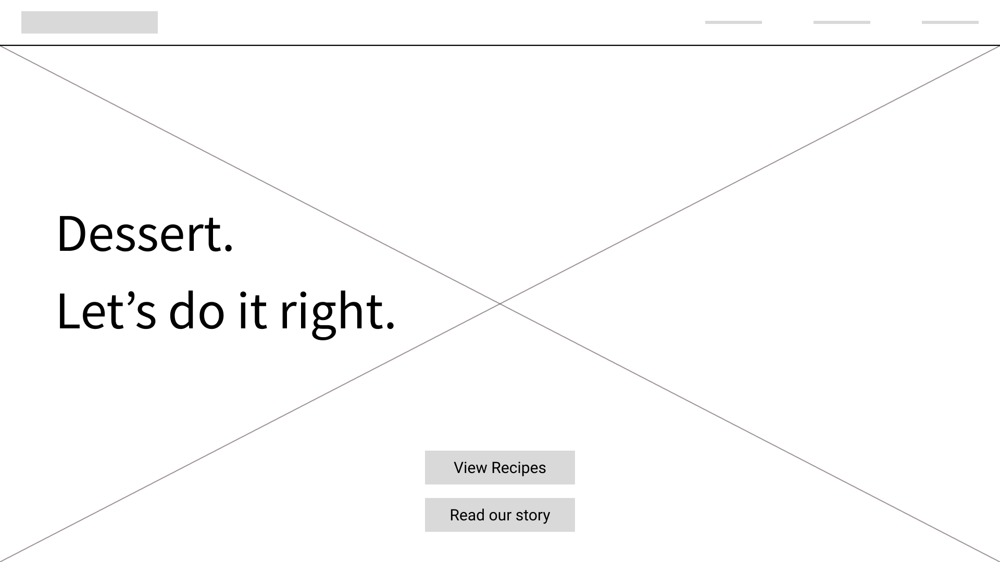
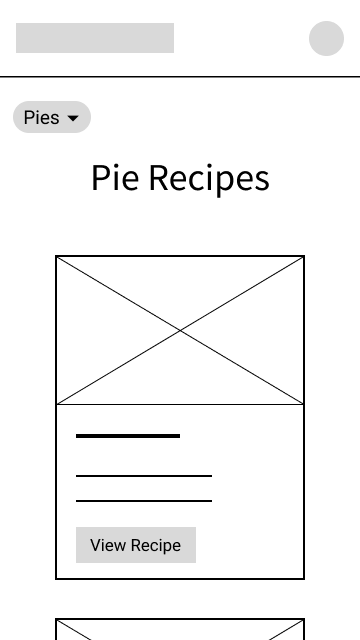
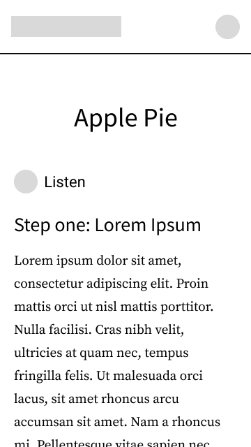
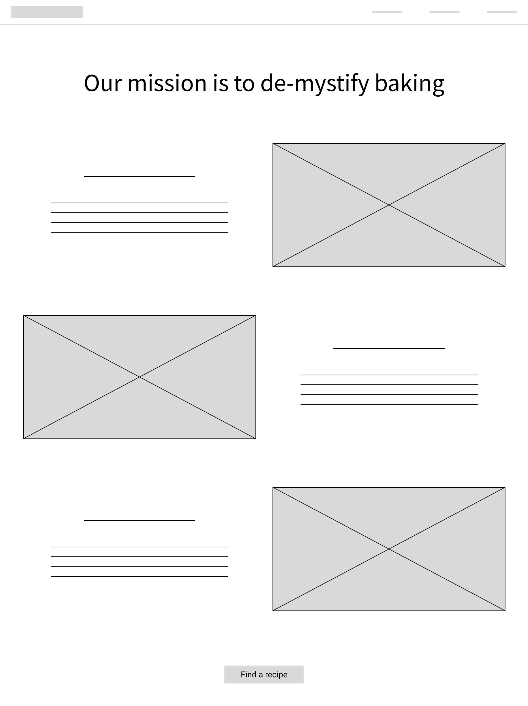
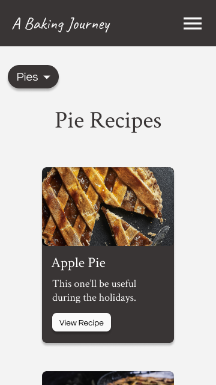
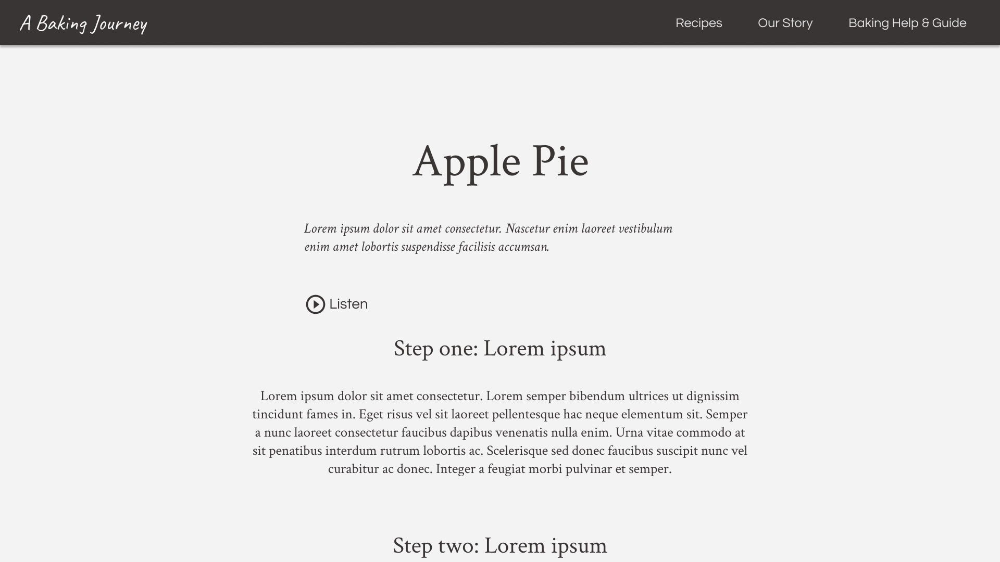

Wireframing
Before looking at any mockups, the underlining design and layout of the pages can be seen and explained by their low fidelity counterparts. I thought that this project would benefit from a straightforward design that makes use of negative space to feel clutter-free.
This "less is more" design approach actually puts more emphasis on the heading text.
As this is a responsive design project, I made desktop and mobile versions of each wireframe and mockup as two screen size examples.
For the recipes page, a "grid of cards" style of layout seemed fitting. The number of columns would depend on the screen width. For the menu filter, available categories can sit on the side of the page, as a sort of sub-navigation.
The sub-navigation can only be at the side of the page like that when the page's width is large enough to allow for it. Otherwise, it can take the form of a dropdown menu:
After clicking on and being taken to a recipe, a user would see a page with this general layout:

When using paragraphs, it's important to be mindful of line width and line height, as a paragraph spanning too much of the page or lines of text being too close together can make for difficult reading. The built-in audio option was another idea for enhanced accessibility.
Moving on to the "about" page, I went for a Z-shaped page layout:
When the screen is smaller, it can simply become a single-column layout.
With the wireframes covered, we can move on to visual design and mockups.
Visual Designing
The following style guide displays the visual elements that will be used throughout this website:
After pairing the fonts and iconography shown above with a fitting background image, we have the first page:

The brightness of the background image was decreased in order to increase readability of the foreground text. In implementation, this would likely be done by using the backdrop-filter in CSS. In Figma, however, I did this by placing a black rectangle with 55% opacity behind all of the foreground elements. The same would be done for all following pages.
When the screen's width is small enough, the introductory text can be centered, and a navigation menu can appear.

Next, the recipes page.

The gestalt principle of common region is put into practice here with the white line acting as a barrier between the side navigation and the recipes, which has the effect of us categorizing the navigation and recipes as seperate areas.
Similarity is another concept at work here. We want each recipe card to be the same size and shape, so that it's immediately clear that these are all options of the same kind of thing: a recipe! If one card looked different than the rest, it would inevitably stand out from the rest, which we don't want in this case.
You might also notice that "Pies" on the left is of a heavier font weight than the other categories, to indicate that it's the currently selected category. This is the same concept as "Recipes" at the top right being of a heavier font weight, to indicate that it's the link to the current page.
For the page of the recipe itself, I think that consistency is a notable principle here. The same spacing was made sure to be used each time between sub-headings and their following paragraphs, just as the same spacing was used each time between the end of paragraphs and the next sub-heading:
When the screen's width is smaller, text can be aligned to the left.
For the about page, sub-headings and brief paragraphs lie on one side, and decorative images on the other.

It can become a single-column layout when there isn't enough screen width, with text being centered.
Takeaways
This project was a good example of how designing for different screen sizes isn't necessarily as simple as creating a single design and scaling it up or down without expecting anything to change. Centered text might look best on desktop, while left-aligned might look best on mobile. A side-navigation for filtering menu items might be ideal on some screens, while a dropdown filter is on others. It also made for good practice of visual designing while simultaneously thinking about accessibility, such as in the case of finding a background image while modifying its brightness to keep for sufficient contrast with the foreground elements.
Back to projects